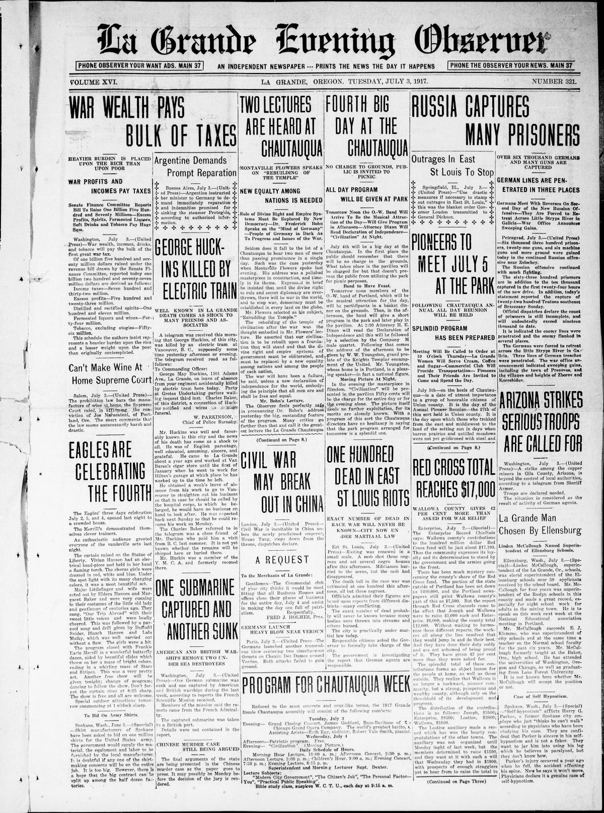
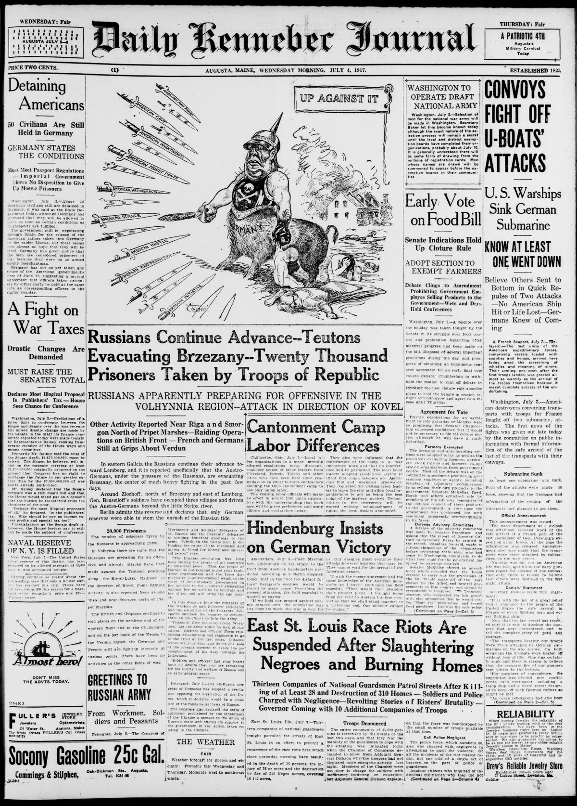
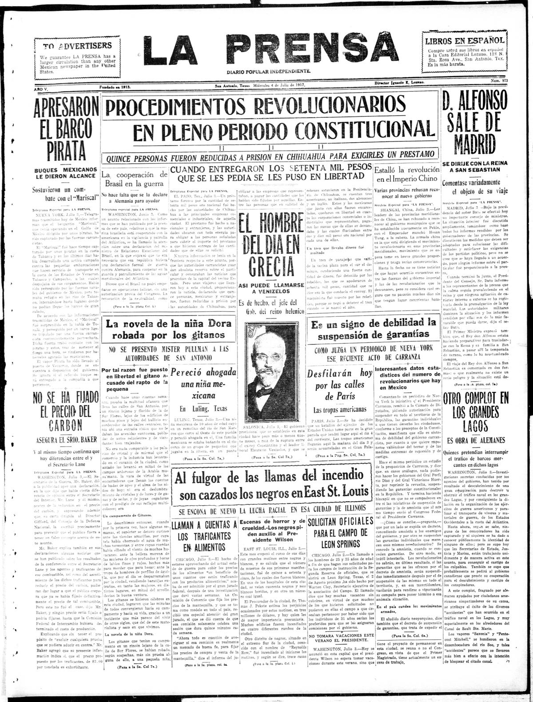
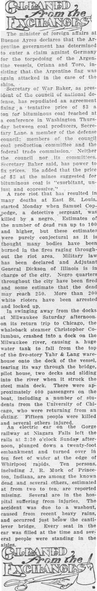
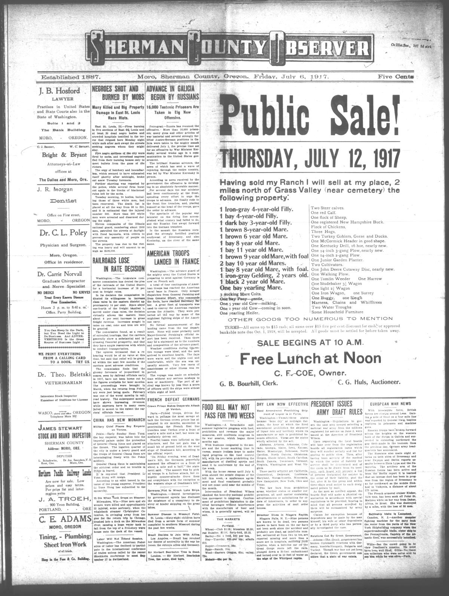
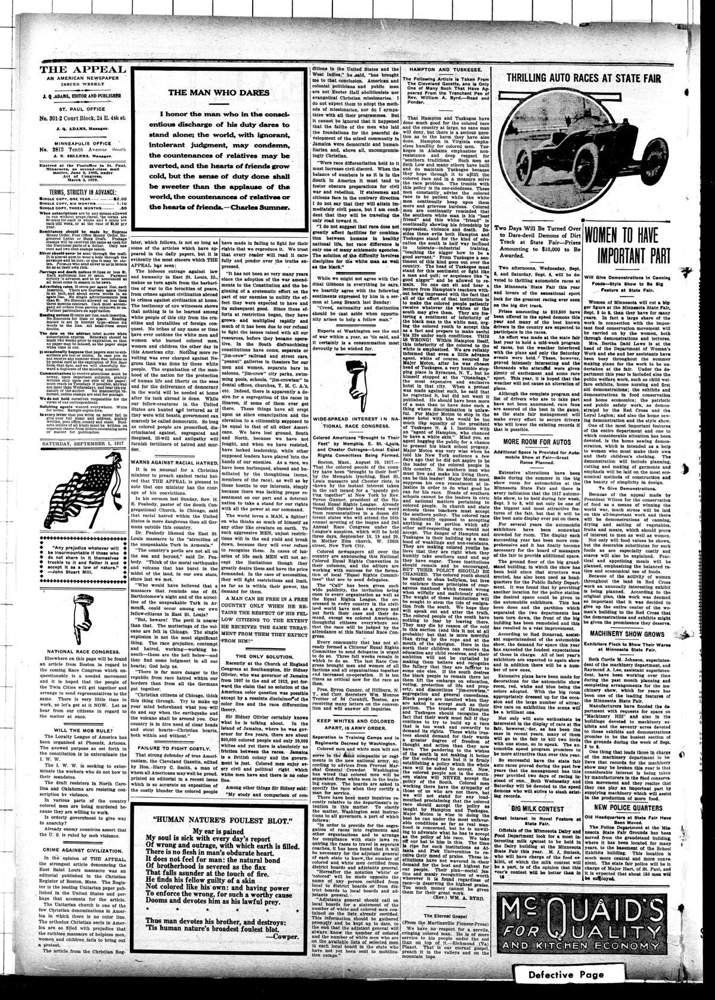

HN HN-405 · July 4, 1917 · Civil Rights & Social Change > Racial, Ethnic & Religious Justice > Lynching and racial violence
Source: Jasper County Democrat, p. 2 — original page; Library of Congress NAACP exhibition.
Report: A short notice said violent attacks and fires devastated Black neighborhoods in East St. Louis, Illinois, offering 100 or more deaths as conjecture because burned structures could conceal victims. Its opening framed the event around a Black suspect's alleged killing of a white officer.
Assessment: The event was a racist massacre, not simply a balanced altercation. The Library of Congress documents 48 killed in its account, while contemporary activists and other studies offer higher disputed estimates. The article itself labels the larger immediate figure conjectural; it does not establish the ultimate total or justify attacks on Black residents.
Authentic images retrieved from Historic Oregon Newspapers (University of Oregon), Library of Congress / Chronicling America and Hoosier State Chronicles (Indiana State Library). Article crops are located using the archive's own OCR word coordinates and rendered at native crop resolution; article clips are assembled from the archive's own article-block images; page scans are reduced-size access renditions. No images were generated, mocked, or retouched.






Not yet acquired. Queued for provider-specific acquisition testing (see source-acquisition manifest).
URL (preserved verbatim): https://newspapers.library.in.gov/?a=d&d=JCDC19170704.2.20
Saved research report: Historical_Newspaper_Event_Research_403-427_2026-10-23.md
Evidence note: A newspaper report means a historical publication made a claim; it does not establish that claim as fact. Contemporary reporting is separated from later scholarly context and our own assessment.